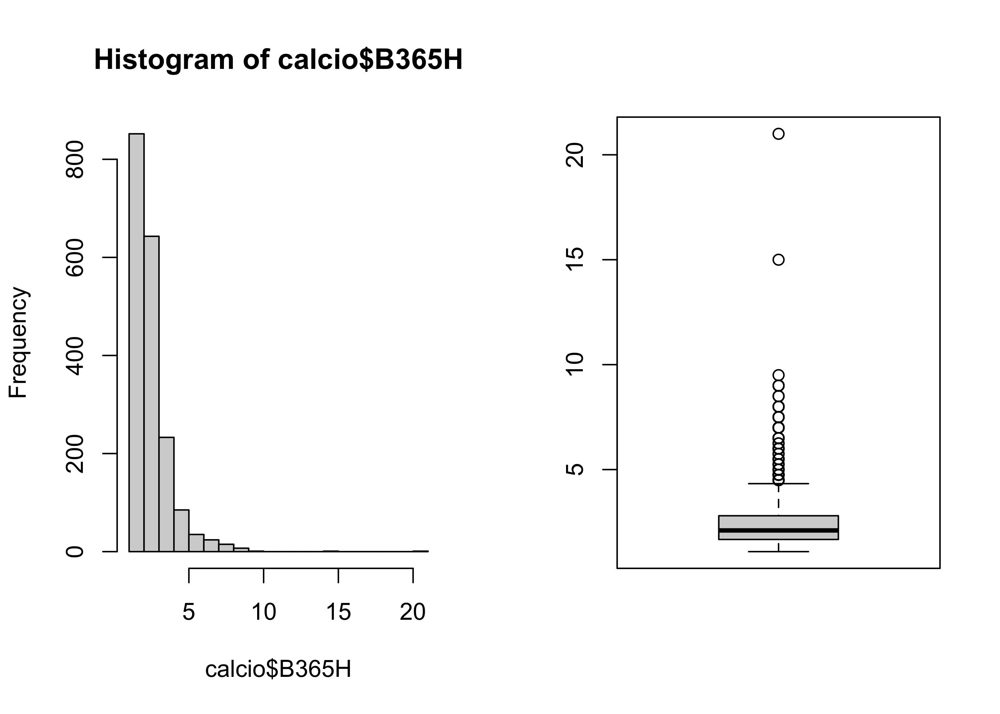
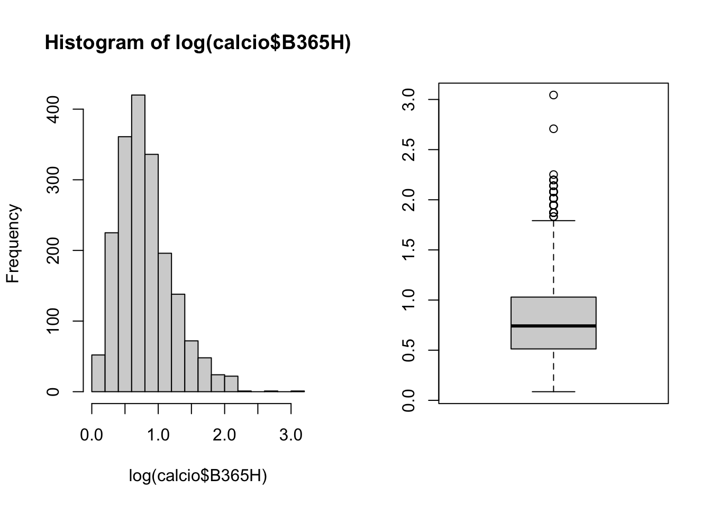
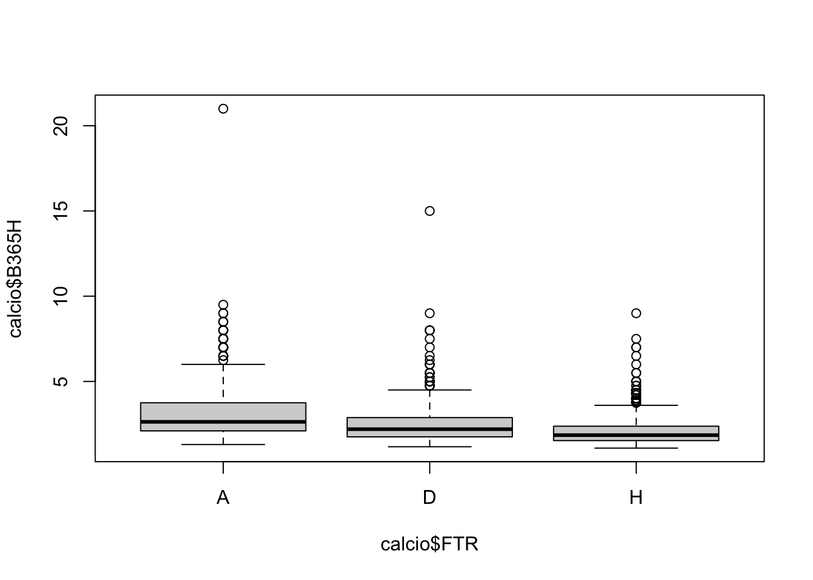
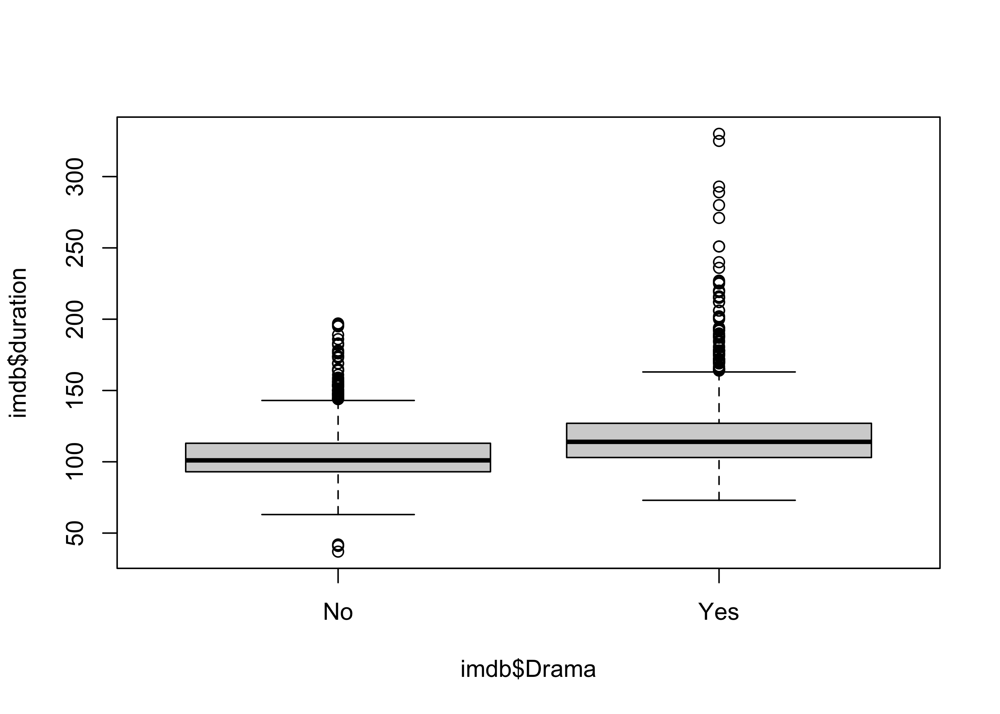
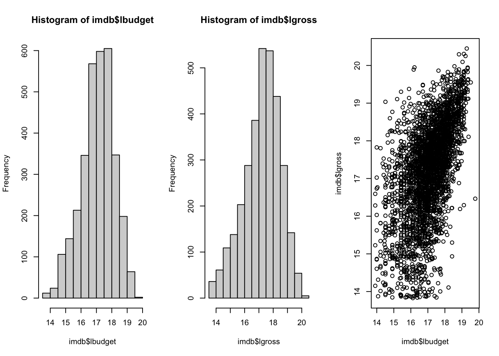

load("../dataset/elezioni.RData")R per l’analisi statistica multivariata
Esercizi 2
Esercizio A
La varianza campionaria dei dati \({\bf x} = (x_1,\dots,x_n)\) è definita come
\[ \text{var}({\bf x}) = \frac{1}{n}\sum_{i=1}^n(x_i - \bar{x})^2, \] dove \(\bar{x}\) è la media campionaria. Si noti che \(\text{var}({\bf x})\) ammette la rappresentazione alternativa
\[\text{var}({\bf x}) = \frac{1}{2 n^2} \sum_{i=1}^n \sum_{j = 1}^n (x_i - x_j)^2.\]
Si scriva una funzione
var2(x)che calcola la varianza di \({\bf x}\) utilizzando la definizione.Si scriva una funzione
var3(x)che calcola la varianza di \({\bf x}\) utilizzando la formula basata sulle distanze tra coppie di elementi.Si supponga che
x = c(1, 4, 2, 2, 10). Si verifichi che le due funzionivar2(x)evar3(x)forniscono lo stesso risultato.Si supponga ora che
x <- 1:3000. Si notano differenze rispetto al punto precedente?Si confrontino le funzioni
var2evar3con la funzionevarimplementata in R, utilizzando i dati del punto 3. Come mai i risultati differiscono, anche se di poco? Si consulti la documentazione per rispondere.
Esercizio B
Questo esercizio ripercorre l’unità I del corso Statistica I, a cui si rimanda per un ripasso sugll’indice di Gini e una descrizione del problema.
A questo link sono disponibili i dati delle elezioni municipali del 2016 presso il comune di Milano.
- Si carichino in memoria i dati.
- Quali variabili contiene il dataset
elez? Di quale tipologia sono?
str(elez)'data.frame': 537619 obs. of 2 variables:
$ Lista : Factor w/ 9 levels "Rizzo, B. V.",..: 1 1 1 1 1 1 1 1 1 1 ...
$ Municipio: Factor w/ 9 levels "1","2","3","4",..: 1 1 1 1 1 1 1 1 1 1 ...Si ottenga il numero di voti ottenuti da ciascun candidato nei differenti Municipi di Milano.
Si ottenga il numero di voti ottenuti da ciascun candidato e se ne faccia un grafico. Si ottenga inoltre la percentuale di voti ottenuti da ciascun candidato.
Si scriva la funzione
Gini(x)che calcola l’indice di Gini per una variabile qualitativa. L’indice di Gini è definito come \[ G = 1 - \sum_{j=1}^k f_j^2, \] dove \(f_1,\dots,f_k\) sono le frequenze relative delle \(k\) modalità.
Gini <- function(x) {
freq <- as.numeric(table(x))
freq_rel <- freq / sum(freq)
1 - sum(freq_rel^2)
}- Si scriva una funzione
Gini_norm(x)che calcola l’indice di Gini normalizzato, ovvero \[G_\text{norm} = \frac{k}{k-1} G.\]
Gini_norm <- function(x) {
freq <- as.numeric(table(x))
freq_rel <- freq / sum(freq)
k <- length(freq)
k / (k - 1) * (1 - sum(freq_rel^2))
}- Si valuti la polarizzazione dei voti tra i candidati nelle diverse municipalità utilizzando l’indice di Gini normalizzato. Si organizzino quindi i risultati in una tabella e si dica quale municipalità presenta la polarizzazione maggiore.
tapply(elez$Lista, elez$Municipio, Gini_norm) 1 2 3 4 5 6 7 8
0.6865002 0.7315898 0.7237984 0.7260422 0.7303878 0.7287159 0.7295412 0.7352783
9
0.7436358 Esercizio C
Questo esercizio riprende i dati considerati nell’unità J del corso Statistica I, a cui si rimanda per una descrizione più approfondita del dataset.
I dati sono disponibili a questo link.
- Si carichino i dati in memoria e si salvi il dataset nell’oggetto
province.
province <- read.table("../dataset/province.csv", header = TRUE)Quali variabili contiene il dataset
province? Di quale tipologia sono?Si rappresenti graficamente la variabile
istruzionetramite istogramma. Si calcoli quindi media, mediana e varianza.Si rappresenti graficamente la funzione di ripartizione della variabile
agricoltura.Si rappresenti il diagramma a dispersione delle variabili
agricolturaeistruzione. Si può notare una qualche relazione?Si ottenga la matrice di varianza e covarianza.
Si ottenga la matrice di correlazione. Si commenti la relazione esistente tra
agricolturaeistruzione.
Esercizio D
Nel dataset calcio disponibile a questo link, ciascuna unità statistica rappresenta una partita di calcio della Serie A italiana, relativa ai campionati 2008-2015. Il dataset è composto dalle seguenti variabili:
Dateindica la data della partita.HomeTeameAwayTeamindicano, rispettivamente, la squadra che gioca in casa e la squadra ospite per ciascuna partita.FTRindica se la squadra che giocava in casa ha vinto (H), pareggiato (D), oppure perso (A).Le variabili
B365H,B365D,B365Asono le quote per la vittoria, pareggio, sconfitta della squadra di casa.
Supponendo di scommettere sulla vittoria della squadra di casa, puntando un euro su di essa si otterrebbero B365H euro in caso di vittoria.
- Si carichi il dataset in memoria.
load("../dataset/calcio.RData")- Verificare le tipologie di variabili presenti nel dataset
calcio.
str(calcio)'data.frame': 1900 obs. of 7 variables:
$ Date : Date, format: "2014-08-30" "2014-08-30" ...
$ HomeTeam: Factor w/ 28 levels "Atalanta","Bari",..: 8 22 1 7 11 17 19 24 26 27 ...
$ AwayTeam: Factor w/ 28 levels "Atalanta","Bari",..: 13 10 28 20 18 14 23 5 12 9 ...
$ FTR : Factor w/ 3 levels "A","D","H": 1 3 2 3 1 3 2 2 2 3 ...
$ B365H : num 7 1.67 2.05 3.1 3.9 2 2.2 2.3 3.1 1.8 ...
$ B365D : num 4 3.8 3.4 3.2 3.4 3.4 3.25 3.4 3.3 3.5 ...
$ B365A : num 1.5 5 3.6 2.35 1.95 3.75 3.3 3 2.3 4.5 ...- Controllare se esistono dei dati mancanti nel dataset. Se presenti, si escludano le righe contenenti dei valori mancanti dall’analisi. Suggerimento: si usi la funzione
na.omit.
summary(calcio) Date HomeTeam AwayTeam FTR
Min. :2008-08-30 Cagliari : 95 Cagliari : 95 A:506
1st Qu.:2009-10-28 Chievo : 95 Chievo : 95 D:504
Median :2011-01-16 Fiorentina: 95 Fiorentina: 95 H:890
Mean :2011-10-31 Genoa : 95 Genoa : 95
3rd Qu.:2014-03-23 Inter : 95 Inter : 95
Max. :2015-05-31 Juventus : 95 Juventus : 95
(Other) :1330 (Other) :1330
B365H B365D B365A
Min. : 1.090 Min. :1.400 Min. : 1.100
1st Qu.: 1.670 1st Qu.:3.200 1st Qu.: 2.630
Median : 2.100 Median :3.300 Median : 3.600
Mean : 2.484 Mean :3.557 Mean : 4.564
3rd Qu.: 2.800 3rd Qu.:3.600 3rd Qu.: 5.500
Max. :21.000 Max. :9.000 Max. :26.000
NA's :3 NA's :3 NA's :3 calcio <- na.omit(calcio)- Calcolare i principali indici descrittivi per la variabile
B365H. Rappresentarla poi tramite istogramma ed il boxplot. Sono presenti valori anomali? Da cosa è possibile intuirlo?
summary(calcio$B365H) Min. 1st Qu. Median Mean 3rd Qu. Max.
1.090 1.670 2.100 2.484 2.800 21.000 par(mfrow = (c(1, 2)))
hist(calcio$B365H, breaks = 20)
boxplot(calcio$B365H)
- Effettuare l’analisi del punto precedenti sulla trasformazione logaritmica di
B365H. Sono presenti valori anomali?
summary(log(calcio$B365H)) Min. 1st Qu. Median Mean 3rd Qu. Max.
0.08618 0.51282 0.74194 0.81273 1.02962 3.04452 par(mfrow = (c(1, 2)))
hist(log(calcio$B365H), breaks = 20)
boxplot(log(calcio$B365H))
- Valutare la correlazione presente tra
B365HeB365A. Ci si poteva aspettare un risultato simile? Cosa implicherebbe una correlazione positiva?
cor(calcio$B365H, calcio$B365A)[1] -0.5848867- Rappresentare con un grafico opportuno la relazione tra le trasformate logaritmiche delle variabili
B365HeB365A. Si commenti il risultato.
plot(log(calcio$B365H), log(calcio$B365A))
- Valutare la quota media
B365Hper ciascuna categoria della variabileFTR. Come si interpreta questo risultato?
tapply(calcio$B365H, calcio$FTR, mean) # Comando rapido A D H
3.189565 2.512247 2.065518 - Rappresentare tramite boxplot la variabile
B365Hper ciascuna categoria della variabileFTR. Si commenti il risultato.
plot(calcio$B365H ~ calcio$FTR)
Esercizio E
Nel dataset imdb disponibile a questo link, ciascuna unità statistica è un film estratto dal sito http://www.imdb.com/ (Internet Movie Data Base). Per ciascun film, sono a disposizione le seguenti variabili:
movie_titleè il titolo del film.durationè la durata del film espressa in minuti.lgrossè la trasformazione logaritmica dell’incasso lordo, espresso in dollari.lbudgetè la trasformazione logaritmica del budget, espresso in dollari.Action, Adventure, Animation, Comedy, Crime, Documentary, Drama, Family, Fantasy, History, Horror, Music, Romance, SciFi, Thriller, War, Western, sono variabili qualitative che indicano se il film appartiene o meno al genere. Ciascun film può appartenere a più generi contemporaneamente.
- Si carichi il dataset in memoria. Si controlli la tipologia delle variabili.
load("../dataset/imdb.RData")- Quante sono le unità statistiche?
nrow(imdb)[1] 3227- Qual è la durata media dei film del dataset? E l’incasso medio?
mean(imdb$duration)[1] 111.2699mean(exp(imdb$lgross))[1] 58503794- Ci sono differenze tra la distribuzione della durata (
duration) dei film drammatici (Drama) e quelli non drammatici? Si risponda tramite opportuni indici descrittivi ed analisi grafiche.
plot(imdb$duration ~ imdb$Drama)
- Quali sono i 5 film che presentano, all’interno del dataset, i maggiori incassi? Suggerimento: si usi la funzione
order.
imdb$movie_title[order(imdb$lgross, decreasing = TRUE)][1:5][1] "Avatar " "Titanic " "Jurassic World " "The Avengers "
[5] "The Dark Knight "- Rappresentare con grafici appropriati le distribuzioni marginali e la distribuzione congiunta delle variabili
lbudgetelgross. Che tipo di relazione sembra esserci tra le due variabili?
par(mfrow = c(1, 3))
hist(imdb$lbudget)
hist(imdb$lgross)
plot(imdb$lbudget, imdb$lgross)
par(mfrow = c(1, 1))- Si calcoli la correlazione tra
lbudgetelgrosse si commenti il risultato.
cor(imdb$lbudget, imdb$lgross)[1] 0.5673974- Si calcoli la correlazione tra
durationelgrosse si commenti il risultato. Possiamo quindi concludere che, per guodagnare molto, sia sufficiente produrre un film della durata di 12 ore?
cor(imdb$duration, imdb$lgross)[1] 0.1783172Esercizi tratti dai libro di testo Albert & Rizzo (AR)
- Esercizio 1.14, pag. 41.
- Esercizio 2.1, pag. 75.
- Esercizio 2.2, pag. 75.
- Esercizio 2.3, pag. 75.
- Esercizi 2.4 e 2.5, pag. 75-76.
- Esercizio 2.10, pag. 77.
- Esercizio 2.12, pag. 77.
- Esercizio 3.1, pag. 96.
- Esercizio 3.4, pag. 98.